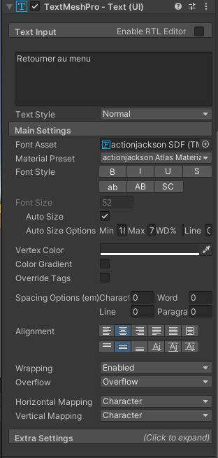
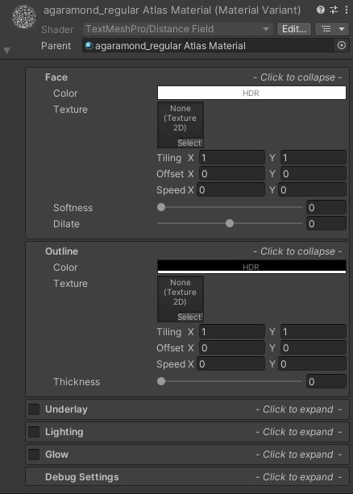

Dans Unity, la composante Text Mesh Pro permet d'afficher du texte. En plus de choisir notre texte, on peut lui assigner une police de caractère et jouer avec l'alignement. Unity a aussi une composante Text, mais Text Mesh Pro offre beaucoup plus d'options intéressantes donc nous la prioriserons.
Par défaut, la composante TextMeshPro est utilisé lorsqu'on ajoute un bouton. Pour ajouter un bouton, on clique droit dans la hierarchy, on appuie sur UI, puis button. On peut aussi ajouter seulement un texte avec un clic droit dans la fenêtre Hierarchy, puis UI, puis Text - TextMeshPro. Si c'est la première fois que vous utilisez la composante, il est possible que Unity ouvre la fenêtre TMP Importer. Si c'est le cas, appuyez sur Import TMP Essentials, puis refermez la fenêtre une fois que tout est importé. Vous pourrez maintenant utiliser TextMeshPro.
Commençons par explorer les paramètres de la composante TextMeshPro.
Premièrement, la boîte qui contient le texte "Retourner au menu" est la boîte de texte, c'est à cet endroit qu'on écrit le texte que l'on souhaite afficher.
Le paramètre Font Asset vous permet de changer la police de caractère de votre texte, pour ce faire, vous devez créer des polices (Voir plus bas).
Font style vous permet de modifier l'allure de votre texte, gras, italique, majuscule,...
Font size vous permet de choisir la taille de votre texte. Vous pouvez cocher Auto Size si vous souhaitez avoir un texte adaptatif. Ainsi, le texte sera toujours ajusté au plus grand selon l'espace dont il dispose dans la fenêtre. Vous devez alors dicter une valeur minimum et maximum pour la taille du texte.
Vertex Color vous permet de choisir la couleur du texte. Vous pouvez cocher Color Gradient si vous voulez appliquer un dégradé de couleur à votre texte.
Spacing options vous permet de choisir l'espacement entre les caractères, les mots, les lignes et les paragraphes.
Alignment vous permet de choisir l'alignement de votre texte dans sa boîte.
Wrapping, lorsque ce paramètre est actif (enabled), cela fait en sorte que votre texte fera un saut de ligne à chaque fois qu'il touchera l'extrémité de sa boîte.
Overflow, ce paramètre détermine comment agira le texte qui dépasse de la boîte. Overflow: Afficher le texte. Ellipsis: Met trois petits points à la fin du texte pour indiquer qu'il se poursuit. Truncate: Coupe le texte qui dépasse.
Pour créer une police de caractère utilisable, vous devez premièrement importer un fichier avec la police désirée dans votre projet. Vous pouvez télécharger des polices au format .ttf ou .otf en ligne. Une fois que c'est fait, dans la fenêtre Project, créez un dossier Font, puis ouvrez-le. À l'intérieur de ce dossier, faites un clic droit puis sélectionnez Import New Asset. Vous devez maitenant trouver le fichier .ttf ou .otf qui contient votre font dans votre explorateur de fichier. Appuyez sur Import lorsque vous avez le bon fichier.
Une fois le fichier importé, vous devez créer un Asset qui contient cette police. Pour faire cela, appuyez sur le fichier que vous venez d'importer, allez ensuite dans la barre de menu, cliquez sur Asset, Create, TextMeshPro, FontAsset. À côté de votre police, un asset de couleur bleu devrait être créé. Celui-ci contiendra votre police.
Vous devez maintenant indiquer à votre police quels sont les caractères qu'elle contient. Pour ce faire, appuyez sur le nouvel Asset bleu, puis regardez dans l'inspecteur. Vous devez appuyer sur Update Atlas Texture. Dans le champ Source Font File, glisser le fichier blanc contenant votre police de caractères. Ensuite, dans Character Set, vous devez spécifier quels caractères vous souhaitez avoir, je vous recommande de prendre Extended ASCII pour avoir les lettres, les chiffres ainsi que tous les accents. Ensuite, appuyez sur Generate Font Atlas. Finalement, vous devez descendre jusqu'en bas et appuyer sur Save.
Maintenant que votre Police est créée, vous pouvez la glisser dans le paramètre Font Asset de la composante Text Mesh Pro pour modifier la police de caractère.
Chaque Font Asset a un matériel qui lui est assigné. Les paramètres de celui-ci peuvent être changés.
Si vous voulez gardez une copie de votre matériel original, je vous suggère de copier le matériel et de modifier la copie. Pour ce faire, trouvez votre Font Asset dans la fenêtre de projet (font bleu). Appuyez sur la flèche à droite de votre asset. Cliquez ensuite sur le matériel de votre asset, il est généralement représenté par une boule blanche. Utilisez ensuite la commande ctrl + D pour duppliquer votre matériel.
Pour assigner votre nouveau matériel à votre texte, sélectionnez votre texte dans la hiérarchy pour l'ouvrir dans l'inspecteur, descendez tout en bas de la fenêtre Inspector pour voir le matériel de votre texte. Prenez alors votre nouveau matériel et glissez-le sur la composante matériel. Maintenant, appuyez sur votre nouveau matériel pour le faire apparaître dans l'inspecteur.
Dans face, vous pouvez modifier la couleur de votre texte. Si vous insérez une texture, celle-ci agira comme motif pour votre texte.
Outline vous permet d'ajouter un contour à votre texte. N'oubliez pas d'augmenter le paramètre Thickness pour voir vos modifications!
Underlay vous permet d'ajouter une ombre à votre texte et glow d'ajouter un contour en dehors du contour pour donner un style plus lumineux.